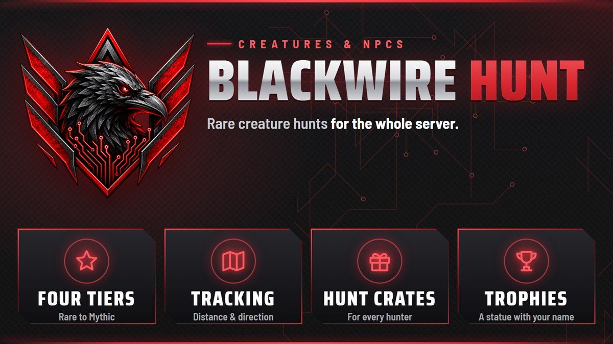
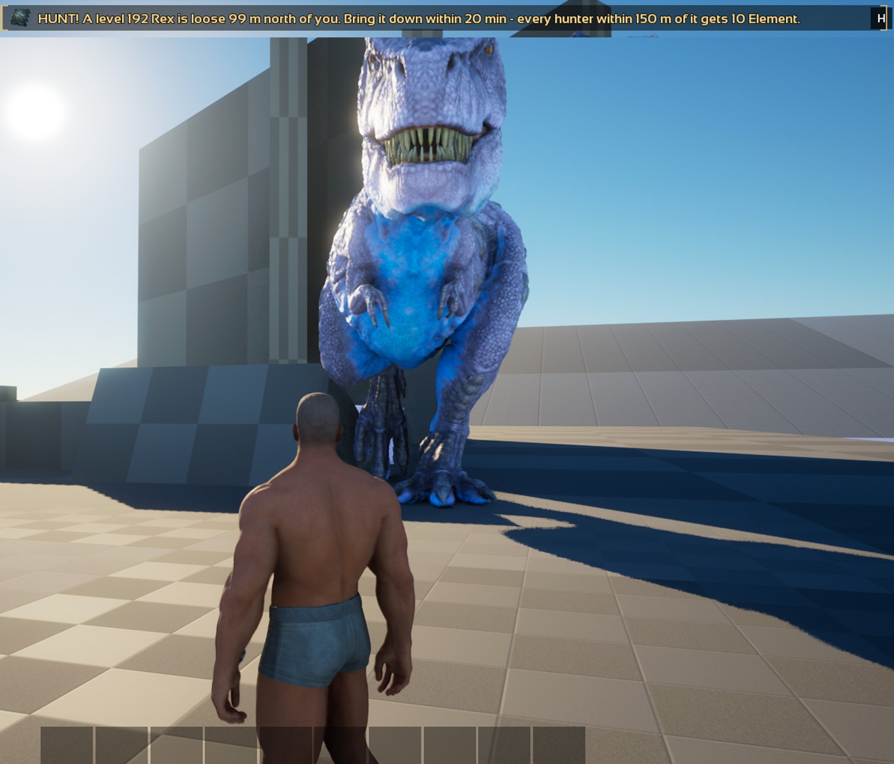
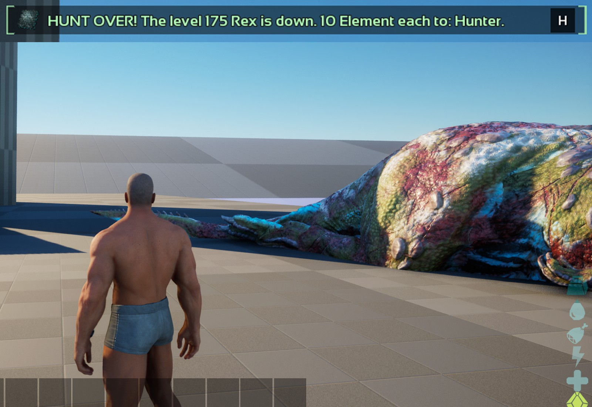
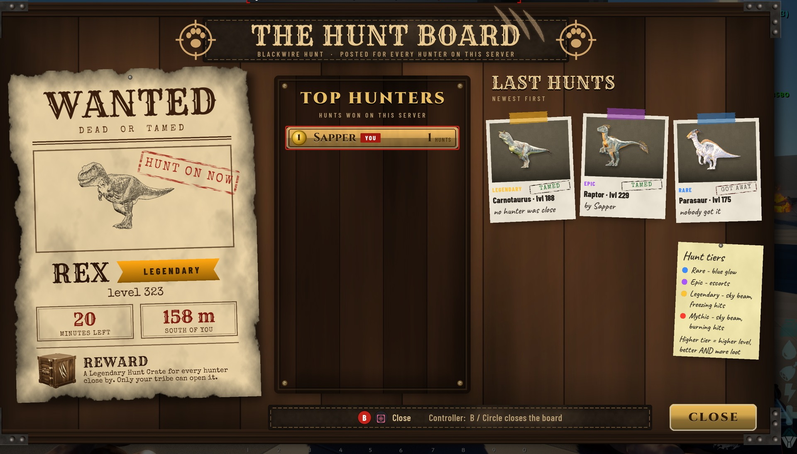
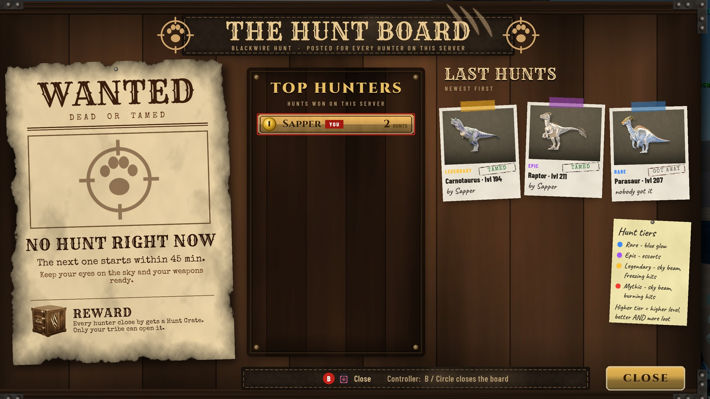
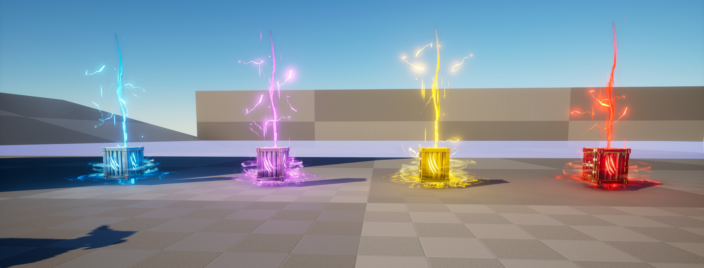

BLACKWIRE
BLACKWIRE
BLACKWIRE
BLACKWIRE
Server-wide rare creature hunts: a glowing high-level creature appears, everyone races to kill or tame it, and every hunter nearby gets a Hunt Crate.

Every hunt rolls a tier. Higher tiers are rarer, stronger, bring escorts and glow in their own colour so you know what you are up against from across the map.
| Tier | Chance | Level | Escorts | Power |
|---|---|---|---|---|
| Rare | 60% | 120 to 220 | None | None |
| Epic | 28% | 150 to 275 +25% | 1 | None |
| Legendary | 10% | 180 to 330 +50% | 2 | Its hits can freeze you |
| Mythic | 2% | 210 to 385 +75% | 3 | Its hits can set you on fire |
Escorts are the same species at 60% of the hunt creature's level and glow faintly in the same colour. Each hit from a Legendary or Mythic has a 25% chance to use its power, and only while it is still wild.
One crate for every hunter in range, in the hunt's tier. It drops at the kill spot and only your tribe can open it, for 30 minutes. The LootQuality setting makes the items better, never fewer.
On Legendary and Mythic hunts, the hunter who did the most damage also finds a trophy in their crate: a statue of the creature with its level and your name. Place it in your base. It can be picked up or demolished like any structure.
Three parts: Right now (the wanted poster for the current hunt), Top hunters (most hunts won on this server) and Last hunts (the last 5 results). It is saved, so it survives restarts.
A tamed hunt creature keeps its tier glow for good, even after a cryopod or an upload to another map. Its freeze and fire powers stay with wild ones only.
If the player the hunt picks is out in the water (swimming, diving or riding a sea creature), the hunt places a sea creature in the water instead. Owners can turn this off.
Any creature on the map, modded ones included, except small and harmless ones like Dodos, Compys, fish and bugs. Owners can set their own skip list.
Optional. Add a Discord webhook and every hunt start and result is posted to your channel or thread, with an optional role ping. No bot needed.
Admins see a BlackWire Hunt page on their wheel: Start a hunt, Start a Legendary hunt and End the hunt.
| To do this | PC | Xbox | PlayStation |
|---|---|---|---|
| Open the Hunt Board | Hold E on yourself | Hold X on yourself | Hold □ on yourself |
| Track the creature | The Hunter's Notice banner shows your own distance and direction. Get within 400 m for CLOSE! warnings. | ||
| Get your Hunt Crate | Be within 150 m when the creature is killed or tamed. Every hunter there gets their own crate. | ||
| Start or end a hunt (admins) | From the Hunt admin folder on the wheel. | ||
Distances and times shown are the defaults. Your server may have changed them.





cheat giveitem "Blueprint'/BlackWire_Hunt/Items/PrimalItem_BWH_Mark.PrimalItem_BWH_Mark'" 1 0 0Ask in the Hunt channel on the BlackWire Mods Discord.